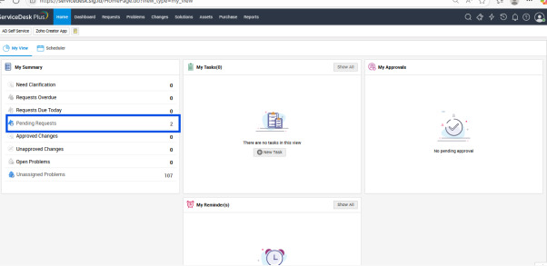
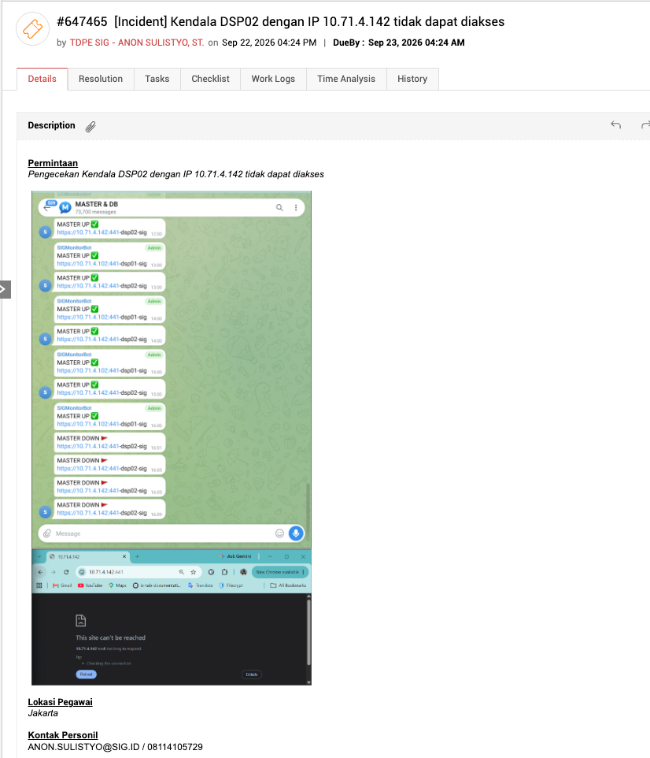
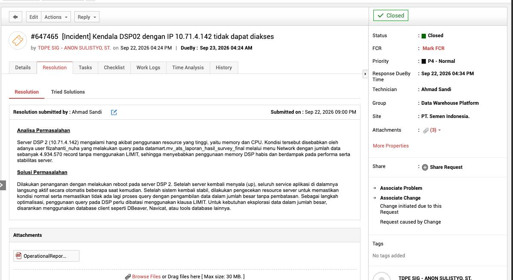
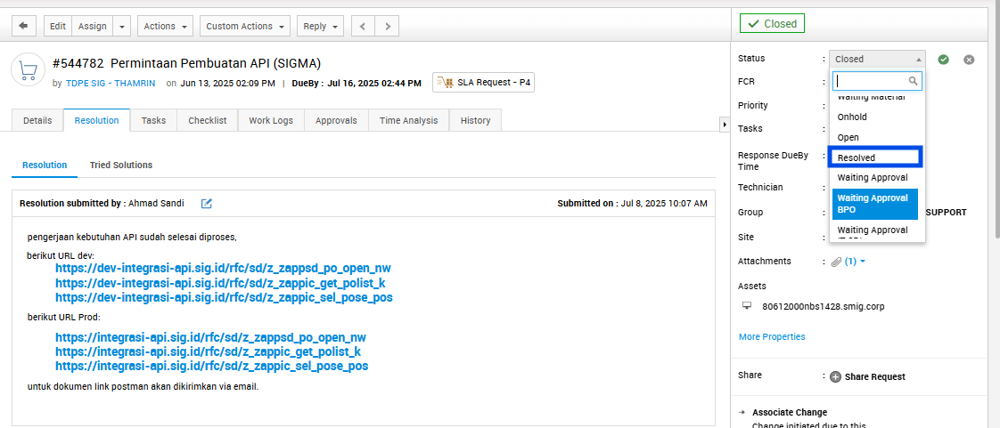
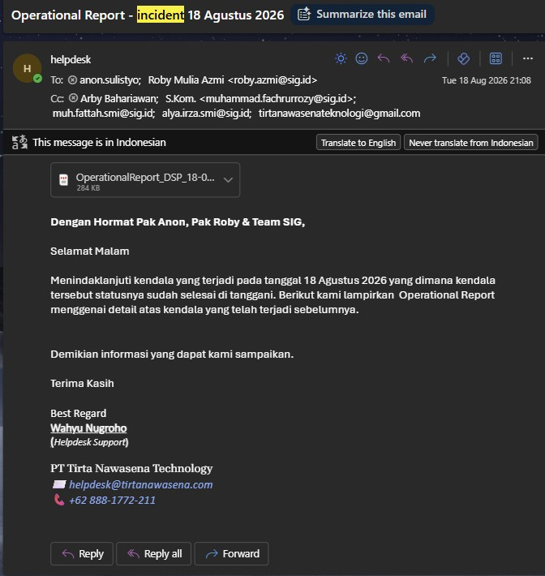

1.Ticket diterima

- Untuk mengetahui ada ticket baru, lihat pada pending request.
2.Cek deskripsi ticket & konfirmasi user

- Cek deskripsi ticket untuk memastikan permintaan terkait dengan project apa. Pastikan setiap rekan helpdesk mengerti maksud dan tujuan ticket tersebut.
- Setelah memahami maksud ticket, konfirmasi dengan User (PIC) yang bertanggung jawab untuk memastikan detail kendala yang di alami juga menginformasikan kendala tersebut sedang dalam pengecekan lebih lanjut.
3.Technical confirmation
langkah selanjutnya adalah eskalasi kendala atau incident tersebut ke team teknis dengan menginformasikan: nomor ticket, subject, dan deskripsi ticket. Jika ada lampiran pada ticket, download dan kirimkan juga ke team teknis.
Notes: lampiran ada di bawah deskripsi ticket.
4.Resolved ticket (isi resolusi)
Jika inciden/kendala sudah selesai dilakukan troubleshooting, status ticket perlu di-resolved segera untuk menghindari over SLA.
Template resolution ticket Incident
Analisa Permasalahan:
Server DSP 2 (10.71.4.142) mengalami hang akibat penggunaan resource yang tinggi, yaitu memory dan CPU. Kondisi tersebut disebabkan oleh adanya user filzahanti_nuha yang melakukan query pada datamart.mv_ats_laporan_hasil_survey_final melalui menu Network dengan jumlah data sebanyak 4.934.570 record tanpa menggunakan LIMIT, sehingga menyebabkan penggunaan memory DSP habis dan berdampak pada performa serta stabilitas server.
Solusi Permasalahan:
Dilakukan penanganan dengan melakukan reboot pada server DSP 2. Setelah server kembali menyala (up), seluruh service aplikasi di dalamnya langsung aktif secara otomatis beberapa saat kemudian. Setelah sistem kembali stabil, dilakukan pengecekan resource server untuk memastikan kondisi normal serta memastikan tidak ada lagi proses query dengan pengambilan data dalam jumlah besar tanpa pembatasan. Sebagai langkah optimalisasi, penggunaan query pada DSP periu dibatasi menggunakan klausa LIMIT. Untuk kebutuhan eksplorasi data dalam jumlah besar, disarankan menggunakan database client seperti DBeaver, Navicat, atau tools database

Note: Upload RFO pada Resolution ServiceDesk.
Ubah status menjadi resolved
Setelah resolution terisi, ubah statusnya menjadi resolved.

5.Kirim email ke User
Reply email user/PIC dan informasikan terkait incident yang sebelumnya terjadi telah berhasil di tangani.
- Subject
- Operational Report - incident (tgl) (bulan) 2026
- Email dikirim ke User sesuai data pada ticket.
- To :
anon.sulistyo@sig.id
roby.azmi@sig.id
- Cc :
arby.bahariawan@tirtanawasena.com
muhammad.fachrurrozy@sig.id
muh.fattah.smi@sig.id
alya.irza.smi@sig.id
tirtanawasenateknologi@gmail.com
Contoh email

Hormat Pak Anon, Pak Roby & Team SIG,
Selamat Pagi
Menindaklanjuti kendala yang terjadi pada tanggal (...) yang dimana kendala tersebut statusnya sudah selesai di tanggani. Berikut kami lampirkan Operational Report menggenai detail atas kendala yang telah terjadi sebelumnya.
Demikian informasi yang dapat kami sampaikan.
Terima Kasih
Notes: